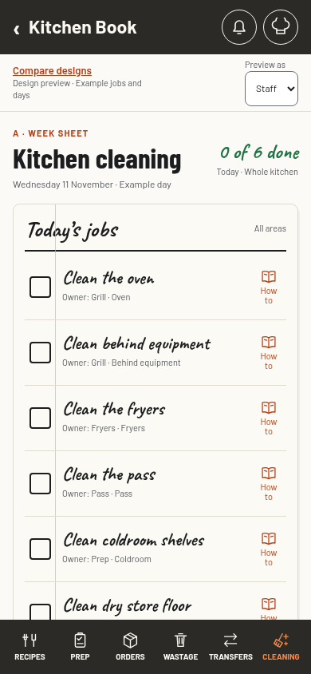
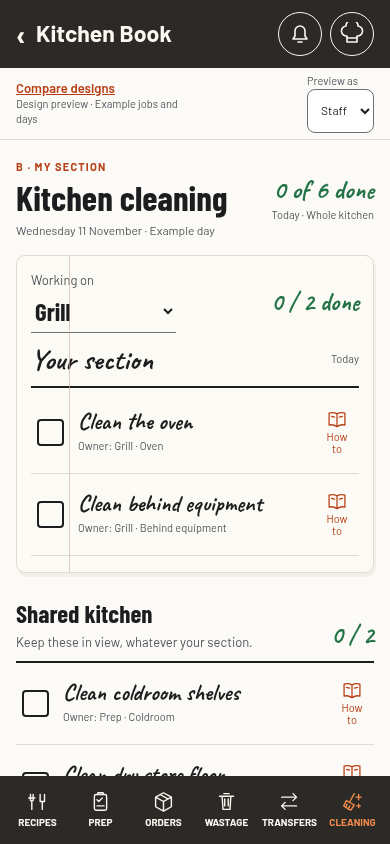
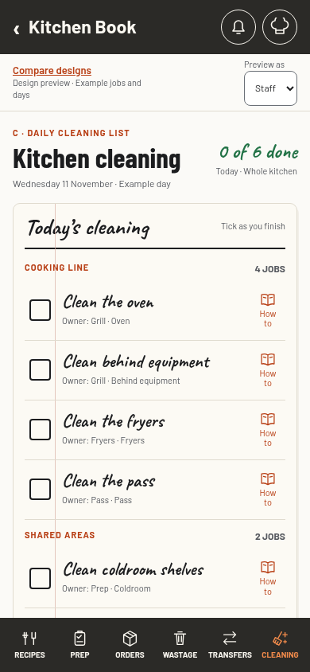

Cleaning · Design conversation · 8 November 2026
A place for every job.
A tick for every clean.
Three ways to organise cleaning across the week. The same kitchen, the same example jobs, a different way to work through them.
A · Changes the leastWeek sheet
A familiar cleaning sheet. Chefs see the whole week on a laptop, or one day at a time on a phone. Staff open today.

Try A · Week sheetGood atSeeing repeat days and gaps across the week.
The trade-offThe full matrix needs a wide screen. A phone shows one day.
My section
Your section’s jobs first, shared kitchen jobs always beside or below them. Chefs can switch to the week.

Try B · My sectionGood atFinding your work quickly without hiding shared areas.
The trade-offSection ownership must be clear and kept up to date.
Daily cleaning list
One ruled list for the whole kitchen. Tick as you go. A simple repeat-day list sits below for chefs.

Try C · Daily listGood atStarting small, with very little to learn.
The trade-offEveryone sees everyone’s jobs. No weekly completion matrix.
The council’s recommendation
C first: 17 points. A: 12. B: 7. Five of six reviewers preferred the simple daily list. The head-chef reviewer preferred A for weekly oversight. Our suggested direction is C’s daily list with A’s chef weekly view; the skeptic and keeper would try a real week before adding the matrix. Read the scores and disagreement.
The navigation move, in all three
Cleaning takes the current Guides slot. The navigation stays at six destinations. Guides moves into the chef-hat menu, under More, with a How to link beside each cleaning task. Try the chef hat in any preview.
Your areas and equipment
Coldroom, freezer, dry store, oven, fryers, behind equipment, pass and shelves. The examples connect these areas to a responsible kitchen section. Each tick records who and when, with Undo.
What is still ours to shape
Which exact jobs belong in each area, which days they repeat, and which section owns each shared job. Example days and completion times are illustrations only. No cleaning procedure or routine is confirmed here.